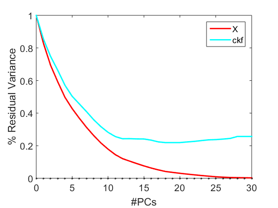
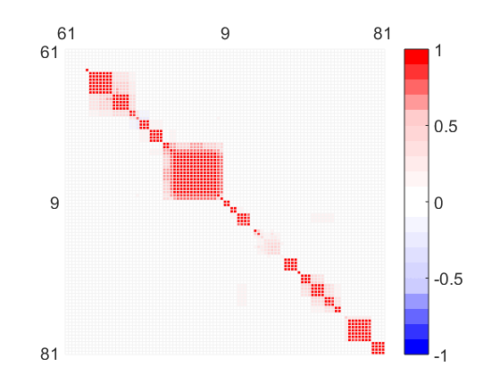
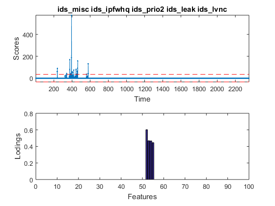
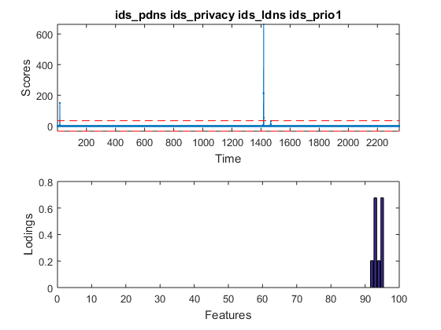

Contents
EDA example with GPCA using the MEDA Toolbox.
See README.txt for more details.
Data set and Analysis:
J. Camacho, R.A. Rodríguez-Gómez, E. Saccenti, Group-wise Principal Component Analysis for Exploratory Data Analysis. Accepted in JCGS. 2017.
Camacho, J., Maciá-Fernández, G., Díaz-Verdejo, J., García-Teodoro, P. Tackling the Big Data 4 Vs for Anomaly Detection. INFOCOM'2014 Workshop on Security and Privacy in Big Data, Toronto (Canada), 2014.
The VAST 2012 2nd mini challenge is a benchmark for visualization in cybersecurity (http://www.vacommunity.org/VAST+Challenge+2012)
The goal is to identify cybersecurity issues in the data collected during two days from a computer network. During those days, a number of non-legitimate programs were found to be running on several computers, slowing them down. A cyber-forensics operation is required to discover the root causes for this strange behavior.
Two typical sources of data are collected from the network: firewall and Intrusion Detection System (IDS) logs. The firewall analyses the incoming and outgoing data traffic in the network, and records in a log file all connection attempts that are blocked according to security policies. The IDS employs higher level intelligence to identify cybersecurity incidents in data traffic. It also stores the results in a log file, though it does not block any traffic connection. Also, typically, it only analyses a sub-set (sample) of the total traffic.
A total of 2350 observations, each one with the information for one minute, are obtained. For every sampling period of one minute, we defined a set of 112 variables that represent the information from the two data sources: 69 variables for the firewall log and 43 for the IDS log. The number of variables was reduced to 95 by discarding those with constant value throughout the capture period. The definition of the variables is introduced in Tackling the Big Data 4 Vs for Anomaly Detection. INFOCOM'2014 Workshop on Security and Privacy in Big Data, Toronto (Canada), 2014.
% coded by: José Camacho Páez. % last modification: 6/Feb/17.
Inicialization, remember to set the path of the toolbox
clear close all clc load gpca % Set to true for the published result in the first reference. Option false % makes use of a more sensible weighting (see Data folder) published = false; % preprocess if published, xcs = preprocess2D(x,2); else xcs = preprocess2D(x,2,weight_alt); end
Selection of the PCs
var_pca(xcs,0:30,0); % 12 PCS (published false) or 15 PCs (true) could be a choice
 Visualize MEDA
[meda_map,meda_dis,ord] = meda_pca(xcs,1:15,0,0.1,11); % several groups of variables are found
 Compute states with GIA
c = 0.7; [b ,stg]= gia(meda_map,c);
Prepare data for treemap visualization: load fortreemap to http://nesg.ugr.es/meda-visualization/
names = var_l; if published, weights = (weight-1)/9; else weights = (weight_alt-1)/9; end states = b'; save fortreemap names weights states
G-PCA
[P,T] = gpca(xcs,stg,1:12);
Visualizing scores and loads
for i=1:2, figure t = T(:,i); % score lim = tinv(0.99,size(t,1)-1)*std(t)*sqrt(1+1/size(t,1)); timestamps{i} = obs_l(find(t>lim | t<-lim)); subplot(2,1,1), plot(t,'.-'), hold on, plot(-lim*ones(size(t)),'r--'),plot(lim*ones(size(t)),'r--') ylabel('Scores'), axis tight, xlabel('Time') tit = {}; % title vars = find(P(ord,i)); variables{i} = var_l(ord(vars)); for j=1:6:length(vars), tit{end+1} = strjoin(var_l(ord(vars(j:min(j+5,length(vars)))))); end title(tit,'Interpreter','none') subplot(2,1,2), bar(P(ord,i)) % loading ylabel('Lodings') xlabel('Features') end 